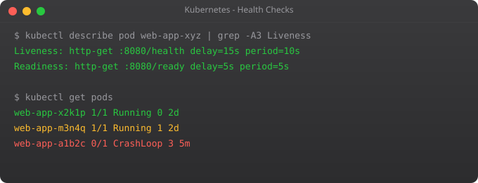

There is a subtle but critical problem with Kubernetes that beginners often discover the hard way in production. When you do a rolling update, Kubernetes starts a new pod and, after a few seconds, considers it "running" and starts sending it traffic. But "running" just means the container process started — it does not mean the application inside is actually ready to handle requests. If your Node.js app takes 15 seconds to warm up, those first 15 seconds of traffic will get 502 errors.
I encountered this exact problem at a company I worked with. Their deployment pipeline would mark a release as successful, but for the first 20 seconds after every deploy, users were seeing errors. Nobody could figure out why for weeks. The answer was simple: no readiness probes. Kubernetes was routing traffic to pods that were still starting up.
Kubernetes has three types of probes that solve this completely: liveness, readiness, and startup. Together they give you fine-grained control over when pods receive traffic and when they get restarted.
A liveness probe answers the question: "Is this container alive and running correctly?" If it fails, Kubernetes restarts the container. Use it to detect deadlocks or corrupted state that requires a restart to fix.
A readiness probe answers: "Is this container ready to receive traffic?" If it fails, Kubernetes removes the pod from the Service endpoints — traffic stops going to it, but the container is not restarted. Use it during startup and for temporary unavailability (like when a background job is consuming all resources).
A startup probe answers: "Has this container finished its initial startup?" While the startup probe is running, liveness and readiness probes are disabled. This prevents premature killing of slow-starting legacy applications.
Each probe type can use one of three checking mechanisms.
HTTP GET — Kubernetes sends an HTTP GET request to the specified path and port. If the response code is 200–399, the probe passes. This is the most common mechanism for web applications.
TCP Socket — Kubernetes tries to open a TCP connection to the specified port. If the connection succeeds, the probe passes. Good for databases or services that do not have HTTP endpoints.
Exec — Kubernetes runs a command inside the container. If the exit code is 0, the probe passes. Most flexible but most resource-intensive.
apiVersion: apps/v1
kind: Deployment
metadata:
name: web-app
spec:
replicas: 3
selector:
matchLabels:
app: web-app
template:
metadata:
labels:
app: web-app
spec:
containers:
- name: web-app
image: web-app:2.0
ports:
- containerPort: 8080
readinessProbe:
httpGet:
path: /health/ready
port: 8080
initialDelaySeconds: 10 # Wait 10s before first probe
periodSeconds: 5 # Check every 5 seconds
timeoutSeconds: 3 # Fail if no response in 3s
failureThreshold: 3 # Fail 3 times before marking not ready
successThreshold: 1 # 1 success needed to mark ready againkubectl apply -f deployment-with-readiness.yaml
# Watch pods — they will show 0/1 READY until the probe passes
kubectl get pods -w
# See probe events in pod description
kubectl describe pod web-app-xxxxx | grep -A 20 "Conditions\|Events" livenessProbe:
httpGet:
path: /health/live
port: 8080
initialDelaySeconds: 30 # Give app 30s to fully start
periodSeconds: 10 # Check every 10 seconds
timeoutSeconds: 5
failureThreshold: 3 # Restart after 3 consecutive failuresThe key thing about liveness probes is setting initialDelaySeconds correctly. If your app takes 20 seconds to start and you set initialDelaySeconds: 5, the liveness probe will fire while the app is still starting, fail, and cause an infinite restart loop. This is the most common liveness probe mistake. When in doubt, set a higher initial delay.
startupProbe:
httpGet:
path: /health/live
port: 8080
failureThreshold: 30 # Give up to 30 * 10s = 5 minutes to start
periodSeconds: 10
livenessProbe:
httpGet:
path: /health/live
port: 8080
periodSeconds: 10
failureThreshold: 3
readinessProbe:
httpGet:
path: /health/ready
port: 8080
periodSeconds: 5
failureThreshold: 3With this configuration, Kubernetes gives the app up to 5 minutes (30 attempts × 10 seconds) to start up. Once the startup probe succeeds once, it disables itself and hands over to the liveness and readiness probes for ongoing monitoring.
readinessProbe:
tcpSocket:
port: 5432
initialDelaySeconds: 15
periodSeconds: 10 livenessProbe:
exec:
command:
- /bin/sh
- -c
- "redis-cli ping | grep -q PONG"
initialDelaySeconds: 30
periodSeconds: 10Even with perfect probes, rolling updates can temporarily reduce availability. A PodDisruptionBudget (PDB) tells Kubernetes the minimum number of pods that must always be available, even during voluntary disruptions like rolling updates or node drains.
apiVersion: policy/v1
kind: PodDisruptionBudget
metadata:
name: web-app-pdb
spec:
minAvailable: 2 # Always keep at least 2 pods running
selector:
matchLabels:
app: web-app# Check pod readiness status
kubectl get pods
# See probe failure events
kubectl describe pod POD_NAME | grep -i probe
# Watch restart counts (high restarts = liveness probe issues)
kubectl get pods -o wide
# Check events across the namespace
kubectl get events --sort-by=.lastTimestampYour pods are now reliable — they only receive traffic when ready, and they self-heal when they become unhealthy. In Part 10, we tackle Helm — the package manager for Kubernetes. Instead of managing dozens of YAML files manually, Helm lets you deploy entire applications from versioned, configurable charts. It also enables repeatable deployments across multiple environments with simple configuration overrides.
Liveness: is the container alive? Failure restarts it. Readiness: is the container ready for traffic? Failure removes it from the Service load balancer but does not restart it. Use both — liveness for crash detection, readiness for startup and temporary unavailability.
A startup probe gives slow-starting applications time to initialise. While it runs, liveness and readiness probes are disabled, preventing premature restarts of legitimately slow-starting containers like legacy Java apps.
After consecutive failures exceeding failureThreshold, Kubernetes kills and restarts the container. The pod stays on the same node; only the container restarts. The restart count increases, visible via kubectl describe pod.
HTTP GET (checks HTTP response code), TCP Socket (checks if port is open), and Exec (runs a command, checks exit code 0). HTTP GET is most common for web apps. TCP Socket works for databases. Exec is most flexible.
Set initialDelaySeconds (wait before first probe), periodSeconds (probe frequency), timeoutSeconds (response deadline), failureThreshold (failures before action), and successThreshold (successes needed to pass). Always set initialDelaySeconds generously to avoid restart loops during startup.